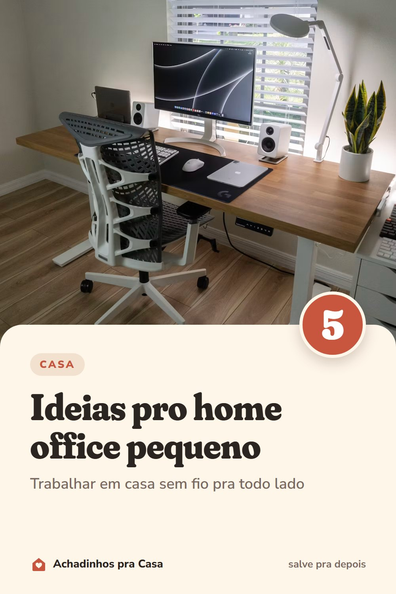

Casa
Home office pequeno e organizado: 5 ideias
Trabalhar em casa sem fio pra todo lado.
- Mesa com o essencialComputador, um bloco e uma caneca. O resto vai para gavetas e prateleiras.
- Tomadas embaixo do tampoUma régua de tomadas presa embaixo da mesa tira os fios do chão e da vista.
- Cabos juntosVelcro ou presilhas juntam os cabos atrás do monitor, e uma fita com o nome evita puxar o fio errado.
- Use a paredePrateleira ou nicho acima da mesa guarda livros e papéis sem ocupar o tampo.
- Caixa dos carregadoresCarregadores, fones e cabos soltos numa caixa só, com etiqueta.